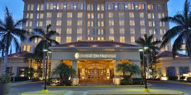

Tegucigalpa, oficialmente Tegucigalpa, Municipio del Distrito Central y abreviado como Tegucigalpa, M. D. C.,nota 1 es la capital y sede de gobierno de la República de Honduras, junto a su ciudad gemela Comayagüela, según los artículos 8 y 295 de la actual Constitución de Honduras.45 Es una de las ciudades más pobladas de América Central.
El Distrito Central se encuentra en la región montañosa sur central de Honduras en el departamento de Francisco Morazán, del cual es también la cabecera departamental.9 El área metropolitana de Tegucigalpa y Comayagüela se encuentra en un valle, rodeado por montañas y ambas, siendo ciudades gemelas, están geológicamente separadas por la cuenca del río Choluteca que les atraviesa.
 La capital es el centro político y administrativo del país donde se ubican 23 embajadas y 16 consulados representando diplomática y consularmente a 39 países de alrededor del mundo.
La Alcaldía Municipal del Distrito Central (AMDC) es la autoridad gubernamental de la ciudad y municipio,17 encabezada por un alcalde y 10 regidores quienes forman la Corporación Municipal, él órgano ejecutivo-legislativo del municipio.